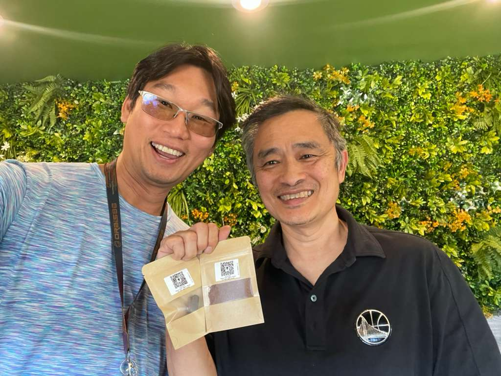
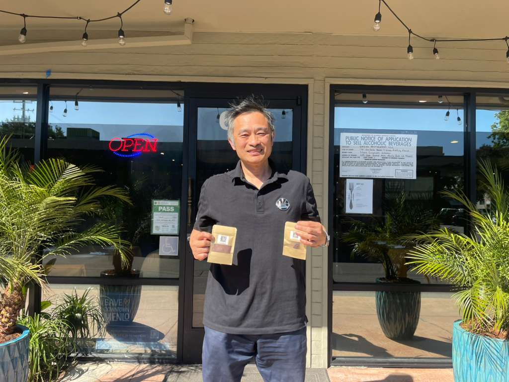

625 Oak Grove Avenue, Menlo Park, CA 94025
Shiok! Singapore Kitchen has been serving traditional Singaporean home cooking on the SF Peninsula since 1999. Founded by Dennis Lim's sister and mother as a 16-seat hole-in-the-wall in San Carlos, the restaurant moved to Menlo Park's Chestnut Street within six months and operated there for over 25 years — claypot rice, satay, laksa, Hainanese chicken rice, beef rendang, char kway teow — until the building was sold and the family was forced to relocate in January 2025.
After a stint operating as a delivery-only ghost kitchen out of Redwood City, the family rebuilt at 625 Oak Grove Avenue in downtown Menlo Park — a $100,000 buildout of a 2,700 sqft space, with the original kitchen staff and family recipes intact. "My customers are like family," Dennis says. "I watch kids here grow up, go to college, and then come back."
Dennis and Agroverse founder Gary Teh first met when Gary moved to the San Francisco Bay Area in 2011. Both are alumni of the National University of Singapore School of Computing — that shared origin story, and 14 years of friendship since, set the foundation for this collaboration. In 2026, Dennis offered Agroverse off-hours access to the Shiok Kitchen commercial space for converting cacao nibs into chocolate bars — completing Agroverse's farm-to-shelf vertical integration on the Bay Area side of the supply chain. Cacao bars produced at Shiok Kitchen carry the kitchen's signature in their composite Currency string on the Agroverse offchain ledger.

